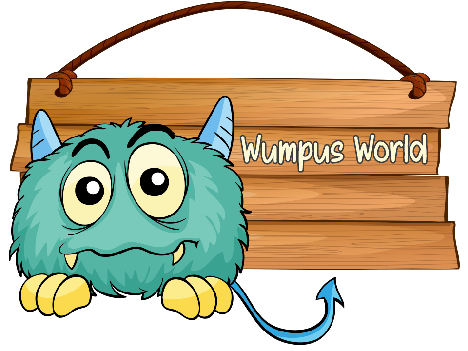

Projects
Below is a selection of my recent work. You can explore my GitHub profile or contact me directly for additional examples.
Overview
Tools and Technologies: Python pandas NumPy matplotlib seaborn WordCloud scikit-learn Prophet nltk TensorFlow Keras

This project presents data-driven solutions to optimize departmental operations in Human Resources, Marketing, Sales, Operations, and Public Relations. The project addresses key business challenges and enhances decision-making by leveraging machine learning, deep learning, and advanced analytics.
In the Human Resources Department, Logistic Regression, Random Forest, and Deep Learning models are used to predict employee turnover, providing actionable insights for retention strategies. The Marketing Department leverages K-Means, PCA, and Autoencoders for customer segmentation, enabling more targeted campaigns. In Sales, time series forecasting with Facebook Prophet helps predict daily sales, ensuring efficient inventory management. The Operations Department employs deep learning models for chest disease detection, enhancing medical diagnostics. Finally, the Public Relations Department applies Naive Bayes and Logistic Regression to predict customer satisfaction and improve engagement strategies.
View on GitHubOverview
Tools and Technologies: Python pandas NumPy matplotlib seaborn scikit-learn XGBoost

A credit card company provided a dataset containing demographic and financial data for 30,000 account holders over the past six months. Each row represents a credit account, with a label indicating whether the account holder defaulted (failed to make the minimum payment) in the month following the six months.
This project aims to develop a predictive model that forecasts credit card defaults based on demographic and financial data. Key tasks include loading and exploring the dataset using pandas, creating visualizations with matplotlib and seaborn, implementing machine learning models with scikit-learn and XGBoost, and applying regularization techniques to reduce overfitting. The project also evaluates model performance, interprets predictions, and delivers actionable business recommendations to improve risk management strategies.
View on GitHubOverview
Tools and Technologies: Python pandas NumPy matplotlib seaborn statsmodels scikit-learn
This project explores the relationship between a country's population size and GDP per capita and its success in the 2024 Olympic Games. By analyzing these variables, we aim to understand how they influence the total number of medals won by different countries. The study also involves clustering countries based on their Olympic performance and socioeconomic context, providing insights into patterns and trends affecting their athletic achievements. Through this analysis, we seek to uncover the extent to which economic and demographic factors contribute to Olympic success.
In this project, we began with data preprocessing to clean and transform the dataset, ensuring it was ready for analysis. We then conducted a correlation analysis to explore the relationships between population, GDP per capita, and the total number of medals won, finding moderate positive correlations. Moving on to regression analysis, we built models to quantify how well these socioeconomic factors predict medal counts, revealing that neither population nor GDP per capita alone is a strong predictor. We performed clustering and PCA analysis to gain deeper insights, allowing us to group countries based on their Olympic performance and visualize these clusters effectively. These steps collectively led us to conclude that while population and GDP per capita have some influence, other factors, such as sports infrastructure and government support, play significant roles in determining Olympic success.
View on GitHubOverview
Tools and Technologies: Python pandas NumPy matplotlib seaborn TensorFlow Keras scikit-learn
This project leverages a sequential neural network model to help a bank identify customers most likely to accept personal loan offers. By analyzing demographic and financial data—such as income, credit card spending, education level, and CD account ownership—the model provides actionable insights to optimize marketing efforts and resource allocation, increasing loan acceptance rates and driving business growth.
The model achieved 98% accuracy, 96% precision, and 87% recall for identifying loan acceptors, ensuring reliability and effectiveness. Key visualizations, including loss/accuracy plots and a confusion matrix, confirm the model's ability to generalize and identify patterns in customer behaviour, enabling more targeted outreach.
View on GitHubOverview
Tools and Technologies: Python LangChain OpenAI API Streamlit SQLAlchemy pandas

This project aims to build AI agents that interact with databases using natural language. The agents simplify the querying and extracting insights from various datasets, enhancing the efficiency of data-driven decision-making.
View on GitHubOverview
Tools and Technologies: Python pomegranate PyTorch NetworkX NumPy matplotlib
The Wumpus World is a classic problem in artificial intelligence that involves designing an agent to navigate a grid-based environment filled with hazards, such as pits and a fearsome Wumpus while searching for gold. The agent must operate under uncertainty, leveraging logical reasoning and perception to make decisions in a partially observable world.
This project focuses on implementing an intelligent Wumpus World agent capable of:
Perceiving environmental cues such as breezes (near pits) and stenches (near the Wumpus).
Applying logical inference to deduce the safe path to the gold.
Balancing exploration and caution to avoid fatal encounters.
The project highlights key AI concepts, including decision-making under uncertainty, logical reasoning, and search algorithms, providing a practical application of intelligent agent design in a challenging and dynamic environment.
View on GitHubOverview
Tools and Technologies: Python pandas NumPy matplotlib seaborn

The project aims to analyze the quality and characteristics of red and white wines by addressing the following questions:
How do the average values of features differ between high-quality and low-quality wines for both red and white wine types?
How does the alcohol content distribution vary between high-quality and low-quality wines for red and white wine types?
What are the differences in total sulfur dioxide content distribution between high-quality and low-quality wines for red and white wine types?
View on GitHubOverview
Tools and Technologies: R ggplot2 GGally olsrr mctest
The project aims to create a regression model to predict the Critical Temperature (Tc) of different superconducting materials.
Guiding questions:
What factors are the most accurate for predicting a given material's Critical Temperature (Tc)?
Can we use the measured properties of a given material to predict its Critical Temperature (Tc)?
View on GitHubOverview
Tools and Technologies: R dplyr tidyr ggplot2
This project has thoroughly examined the factors contributing to variations in life expectancy across different countries, reinforcing its status as a crucial indicator of population well-being and the effectiveness of health systems. Through exploratory data analysis, we have gained valuable insights into how health, socio-economic, and demographic factors impact life expectancy.
The findings reveal significant disparities between developed and developing nations. Countries with lower life expectancy often grapple with substantial challenges, such as elevated adult and child mortality rates and a higher prevalence of diseases like HIV/AIDS. These elements demonstrate strong negative correlations with life expectancy, emphasizing the urgent need for targeted public health interventions. Our analysis underscores the pivotal role of vaccination coverage in enhancing health outcomes. Higher vaccination rates for diseases like Hepatitis B, Polio, and DTP3 are strongly associated with improved life expectancy, underscoring the importance of robust public health measures in the fight against infectious diseases.
Our analysis revealed that the size of a population has little correlation with life expectancy, suggesting that demographic factors alone do not determine longevity. However, it did show a positive correlation between healthcare expenditure—both as a percentage of total expenditure and GDP—and life expectancy. This finding underscores the critical need for sustained investment in healthcare systems to improve health outcomes.
Furthermore, socio-economic factors such as the Human Development Index and years of schooling emerged as more robust predictors of life expectancy than GDP alone. This indicates that holistic development, encompassing education and human welfare, is essential for improving life expectancy.
In conclusion, enhancing life expectancy is a complex endeavour requiring a multifaceted approach. This includes strategies to reduce mortality rates, increase vaccination coverage, and invest substantially in healthcare and socio-economic development. By addressing these interconnected factors, we can make significant strides toward improving population well-being and ensuring healthier futures for all.
View on GitHubOverview
Tools and Technologies: Tableau

The British Airways Review Analytics Dashboard provides a comprehensive overview of customer reviews from March 2016 to October 2023. It highlights key metrics such as overall experience, cabin crew service, in-flight entertainment, food and beverage, and seat comfort. Users can explore trends over time, compare ratings by aircraft type, and view average experiences by country using interactive filters for date, traveller type, seat class, and region. This dashboard is a powerful tool for understanding customer sentiment and identifying opportunities to enhance service quality.
View on Tableau PublicArticles
Browse through my collection of data science articles, where I share insights from my projects, practical tips, and updates on industry trends. You can explore more of my work on Medium.
Overview
This article explores the relationship between a country's population size and GDP per capita and its success in the 2024 Olympic Games. By analyzing these variables, we aim to understand how they influence the total number of medals won by different countries. The article also involves clustering countries based on their Olympic performance and socioeconomic context, providing insights into patterns and trends affecting their athletic achievements. Through this analysis, we seek to uncover the extent to which economic and demographic factors contribute to Olympic success.
View articleOverview

In hypothesis testing, we start with the null hypothesis (H0), assuming no effect or difference. We then collect our observed results—the actual data from the study—and calculate the p-value, which tells us how surprising these results are if H0 is true. A small p-value (e.g., < 0.05) leads us to reject H0, considering the alternative hypothesis (H1) as a possible explanation. A large p-value suggests our results align with H0, so we fail to reject it. Importantly, the p-value is not the probability that H0 is true; instead, it’s the probability of observing our results, or more extreme ones, under the assumption that H0 is correct.
View articleOverview

BigQuery is Google’s fully managed data warehouse, known for processing massive datasets quickly and efficiently. However, with the power to run complex queries comes the challenge of managing performance and costs. Whether you’re analyzing customer data, building dashboards, or developing machine learning models, following best practices for BigQuery optimization is essential. This article will cover five practical strategies to make your BigQuery queries faster and more cost-effective.
View articleAbout
Having developed a solid technical foundation in data science through my academic studies and hands-on projects, I am eager to share my expertise. Below is a summary of my skills, education, recent certifications, work experience, and awards. I look forward to discussing how my background can support your goals.
-
Summary of Skills
Data Wrangling & Preprocessing
Python (pandas, NumPy), R (dplyr, tidyr), SQL, BigQuery
Exploratory Data Analysis
Python (pandas, matplotlib, seaborn, plotly), R (ggplot2, dplyr, tidyr), Tableau, Power BI
Statistical Analysis & Inference
Python (SciPy, statsmodels), R (stats, caret, glmnet, car, lmtest, olsrr)
Machine Learning
Python (scikit-learn, TensorFlow, Keras, XGBoost)
-
Education
Master of Data Science and Analytics, Sep 2024 - Present
University of Calgary, AlbertaOntario College Diploma (Hons) in Internet Applications and Web Development, Sep 2016 - Jun 2019
Algonquin College of Applied Arts and Technology, Ottawa, OntarioMaster of Science (Hons) in Chemistry, Sep 2012 - Jun 2013
Vinnytsia Mykhailo Kotsiubynskyi State Pedagogical University, UkraineBachelor of Science (Hons) in Chemistry, Sep 2008 - Jun 2012
Vinnytsia Mykhailo Kotsiubynskyi State Pedagogical University, Ukraine -
Recent Certificates
Certificate in Artificial Intelligence, 2024
University of Toronto School of Continuing Studies, OntarioCertificate in Data Science, 2022
University of Toronto School of Continuing Studies, Ontario -
Employment Experience
Communications Officer, Sep 2020 - Aug 2024
Health Canada, Ottawa, Ontario
• Developed and maintained over 500 WCAG 2.1 AA-compliant web pages on Canada.ca using Adobe Experience Manager, HTML, and Web Experience Toolkit, reinforcing the government's commitment to inclusivity and accessibility for millions of citizens.
• Created 50+ WCAG 2.1 AA-compliant PDF forms using Foxit, significantly enhancing user experience and supporting the mission of equal access to information.
• Facilitated cross-functional team discussions, leveraging collaborative communication to efficiently align efforts and consistently meet project deadlines, achieving a 100% on-time completion rate.Web Developer, Mar 2019 - Sep 2019
OPIN, A Portage CyberTech Company, Ottawa, Ontario
• Developed and maintained Drupal websites compliant with WCAG 2.1 AA standards, including Holland Bloorview, Hydro Ottawa, and York Region District School Board, focusing on usability to promote easy access and interaction with site features, serving over 300,000 users monthly.
• Produced efficient, well-tested, refactored, documented, maintainable, and extendable HTML, CSS, JavaScript, and PHP code, improving overall site functionality and user engagement.Doctoral Researcher, Nov 2013 - Mar 2016
A. V. Dumansky Institute of Colloid and Water Chemistry, National Academy of Sciences of Ukraine
• Collected and prepared data for analysis, ensuring accuracy, completeness, reliability, relevance, and timeliness, significantly elevating the quality of research findings and optimizing project deliverables.
• Conducted advanced statistical analyses across five research projects, generating actionable insights that contributed to the successful development of two patented devices:
1. Goncharuk, V.V., Taranov, V.V., & Kurliantseva, A.Y. (2017). Device for photometric determination of nitrates in aqueous solutions. [UA Patent No. 116728]. https://sis.nipo.gov.ua/en/search/detail/801092/
2. Taranov, V.V., & Kurliantseva, A.Y. (2015). Device for determining particles. [UA Patent No. 97578]. https://sis.nipo.gov.ua/en/search/detail/885891/
• Developed comprehensive data visualizations and analytical reports using R, ensuring that research findings were easily interpretable for grant proposals and academic publications.
• Presented findings at over 10 international conferences and published three research papers in peer-reviewed journals, resulting in increased citations and broadening the impact of the research:
1. Goncharuk, V.V., Kurliantseva, A.Y., Taranov, V.V., & Nifantova, L.S. (2016). Quality and quantitative assessment of the impact of magnetic field and ultrasound on water with different concentrations of deuterium. Journal of Water Chemistry and Technology, 38(3), 143–148. https://doi.org/10.3103/S1063455X16030048
2. Goncharuk, V.V., Taranov, V.V., Kurliantseva, A.Y., & Syroeshkin, A.V. (2015). Phase transition in waters with different content of deuterium. Journal of Water Chemistry and Technology, 37(5), 219–223. https://doi.org/10.3103/S1063455X15050021
3. Goncharuk, V.V., Kurliantseva, A.Y., & Taranov, V.V. (2014). Detection of heterogeneities of water medium. Journal of Water Chemistry and Technology, 36(5), 205–210. https://doi.org/10.3103/S1063455X14050014
(Publications and patents are listed under the name Alina Kurliantseva.) -
Recent Awards
2023 Assistant Deputy Minister's Merit Award – Collaboration and Service Excellence, 2024
Health Canada, Ottawa, Ontario
Recognized for exceptional collaboration and service delivery within or outside the Branch.2023 Assistant Deputy Minister's Merit Award – Contribution to the Improvement of the Health of Canadians, 2024
Health Canada, Ottawa, Ontario
Acknowledged for making a significant contribution to improving the health of Canadians.COVID-19 Commemorative Coin, 2023
Public Health Agency of Canada, Ottawa, Ontario
Awarded for support and contribution to Canada's COVID-19 response efforts.
Contact
If you have any questions or would like to connect, feel free to reach out:
+1 613 700 4510